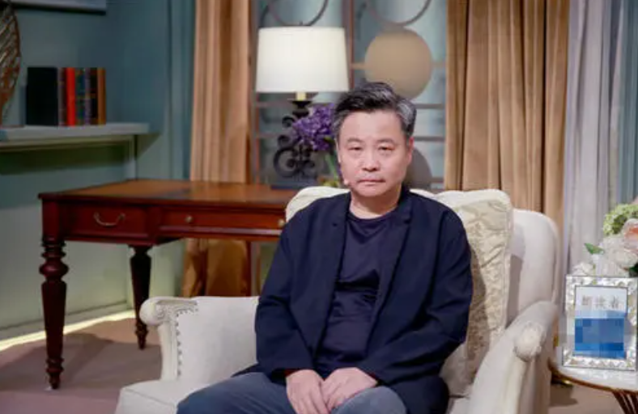
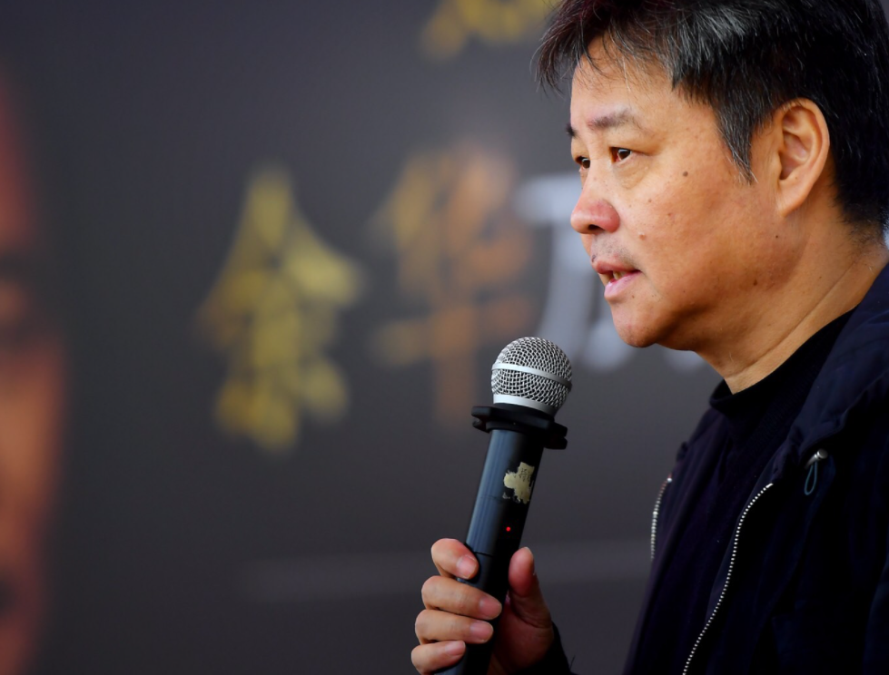

生活照



1960年4月3日生于浙江杭州，毕业于北京鲁迅文学院，中国当代作家。
| 年份 | 图书 |
|---|---|
| 1991年 | 《在细雨中呼喊》 |
| 1993年 | 《活着》 |
| 1998年 | 《许三观卖血记》 |
| 2008年 | 《兄弟》 |
| 2013年 | 《第七天》 |
| 2021年 | 《文城》 |
余华是一个具有很强的理性思维能力的人。他清晰的思想脉络借助着有条不紊的逻辑转换词，曲折但是并不隐晦地表达出来。
余华是新时期中国当代文学非常重要的作家，也是新时期先锋文学的开创者之一。他的《十八岁出门远行》《现实一种》《难逃劫数》《河边的错误》等小说以对人性尖锐而冷酷的审视引人注目，在文学观念、审美姿态、叙述方式上对传统文学形态构成了巨大的冲击与挑战。
余华是一个伟大的作家。他有着“窄如手掌，宽若大地”的伟大作家的胸怀和情怀，有情感，还有一种特别深沉、特别广阔的东西在里面“活着” 。